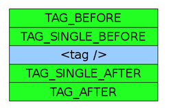

- 5.8. New instructions
5.8.2. Generating PHP code - 5.8.1. Processor overview
« Previous - 5.8.3. Parsing attributes
Next »
5.8.2. Generating PHP code
OPT instructions do not generate the PHP code linearly. Instead, the code snippets are appended or prepended to different buffers associated with each node in the XML tree. There are many buffers available for a single node, inserted into different parts of the tag.
Available code buffers
Code buffers in XML tags
The locations of the code buffers around the XML tags are shown below:
<tag>...</tag>node:

<tag />node:
The TAG_AFTER and TAG_BEFORE buffers wrap the whole node and are present in both tag types. We may paste there the PHP code snippets that affect the whole tag, for example pack it in a conditional block or a loop. It is also possible to wrap either opening or closing tag. The content buffers are available only, if the tag is not empty, that is - it contains any children or the TAG_CONTENT buffer is set. This buffer has a priority over the XML content when rendering.
Note that the single tags use different buffer set and it is important to know, what tag we are trying to add the snippets to.
It is possible to replace the output tag name with TAG_NAME buffer. However, unlike to other buffers, it may store only one snippet at once.
The code buffers around the attribute list are also available:

Code buffers around the attributes
The TAG_ATTRIBUTES_AFTER and TAG_ATTRIBUTES_BEFORE wrap the whole attribute list which may be used to control, whether to display them or not. The TAG_BEGINNING_ATTRIBUTES and TAG_ENDING_ATTRIBUTES should be used to generate new, dynamic attributes either before or after the XML-defined ones.
A single attribute uses the following buffers:
ATTRIBUTE_BEGIN,ATTRIBUTE_END- executed before and after the attribute.ATTRIBUTE_NAME- attribute name replacement (maximum one snippet allowed).ATTRIBUTE_VALUE- attribute value replacement.
Code buffers around other nodes
Opt_Xml_Cdata, Opt_Xml_Text, Opt_Xml_Expression and Opt_Xml_Root are wrapped with TAG_BEFORE and TAG_AFTER buffers only.
Adding a snippet to the buffer
Each node is equipped with two methods that allow to add new PHP code snippets to the buffers:
public function processNode(Opt_Xml_Node $node) { $node->addAfter(Opt_Xml_Buffer::TAG_BEFORE, ' if(condition) { '); $node->addBefore(Opt_Xml_Buffer::TAG_AFTER, ' } '); $this->_process($node); } // end processNode();
addAfter() appends the snippet to the end of the buffer, whereas addBefore() prepends it to the beginning of the buffer.
To enclose a node in curly brackets, you should use both of the functions, as it is show in the sample code above.
addBefore(Opt_Xml_Buffer::TAG_BEFORE)andaddAfter(Opt_Xml_Buffer::TAG_AFTER)wrap the existing snippets in the curly brackets, too, whereas the opposite setting causes the newly inserted block to be wrapped in the existing snippets.
It is possible to fill the buffers in any of the nodes composing the XML tree at any moment of instruction processing.
Other buffer operations
Sometimes, it is necessary to copy the existing buffer from one node to another. OPT provides copyBuffer() method here:
public function processNode(Opt_Xml_Node $node) { // Let $subnode be any other node. $node->copyBuffer(Opt_Xml_Buffer::TAG_CONTENT, $subnode, Opt_Xml_Buffer::TAG_SINGLE_AFTER); $this->_process($node); } // end processNode();
In the example above, we copy the content of TAG_SINGLE_AFTER buffer in $subnode to the TAG_CONTENT buffer in $node. The current buffer size can be obtained with bufferSize(bufferID) method, and clearing the buffer - with clear() (without an argument - clears all the buffers in the node).
- 5.8.2. Generating PHP code
5.8. New instructions - « Previous
5.8.1. Processor overview - Next »
5.8.3. Parsing attributes